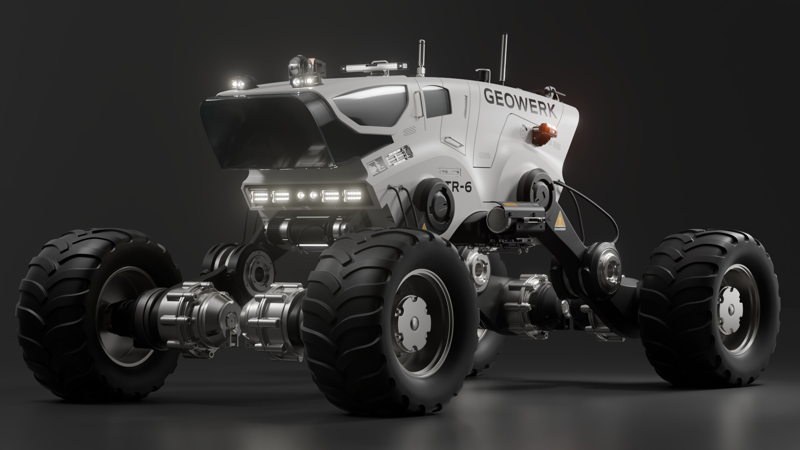
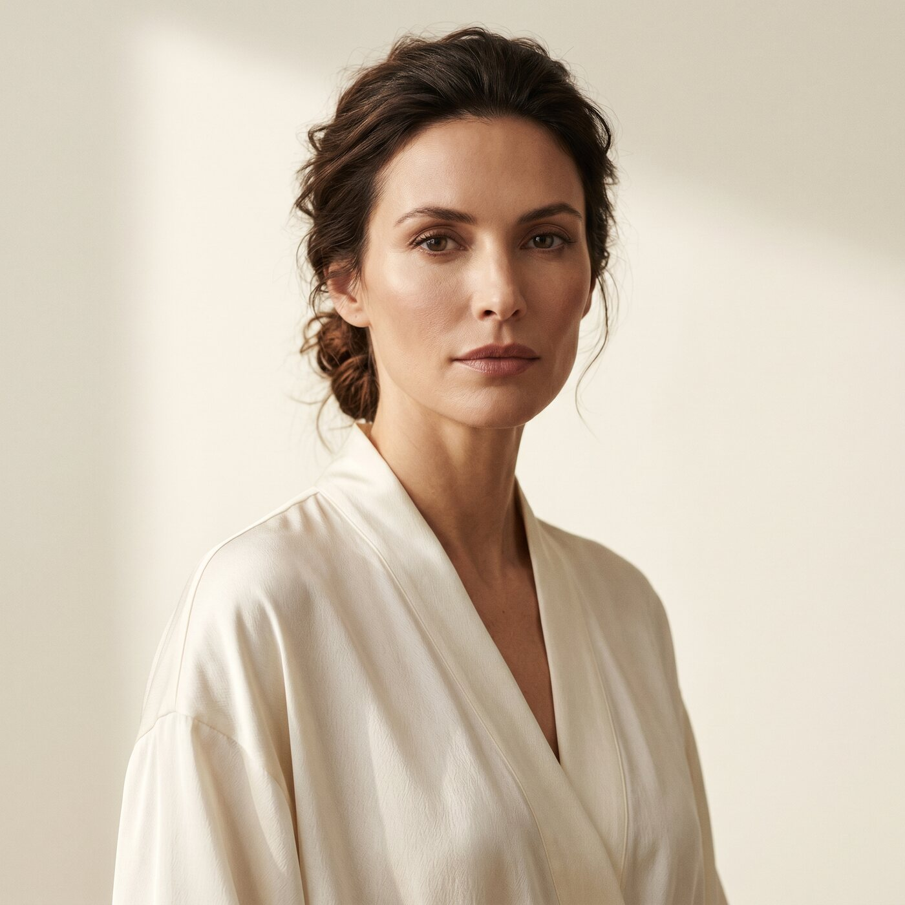
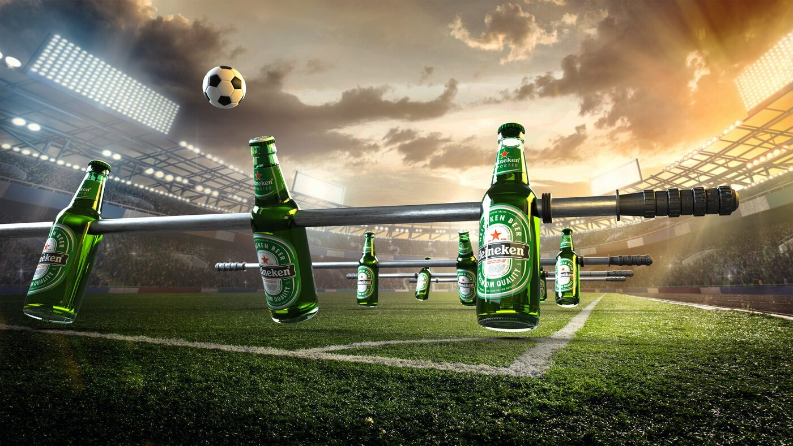
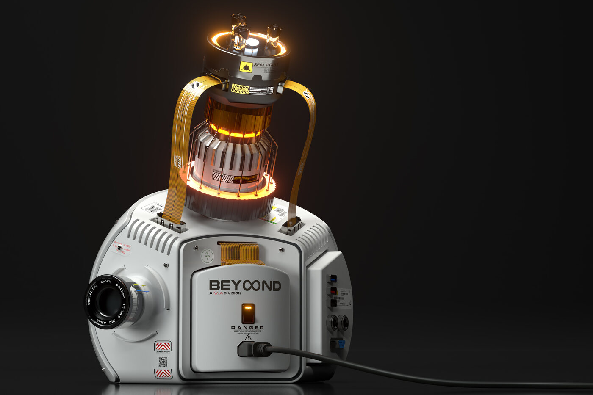
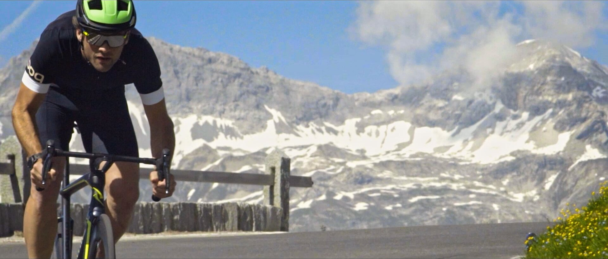

Jenseits desMachbaren.
Fotorealistische Produktbilder und Filme, die nicht gedreht werden, sondern entstehen: präzise in CGI, wenn es auf das Produkt ankommt, und schnell mit KI, wenn es um ganze Welten geht. Für Unternehmen und Agenturen mit hohem Anspruch.
Ein Anspruch.
Zwei Wege.
Beide bauen Bilder von Dingen, die es nicht gibt – mal ein Produkt, mal einen Drehort. Der Unterschied liegt darin, was zählt: Präzision oder Tempo. Und wo beides zählt, verbinden sich die Wege.

PräzisionProduktvisualisierung
Produkte, die es noch nicht gibt oder die sich nicht fotografieren lassen – am Rechner gebaut, fotorealistisch und bis ins letzte Detail kontrolliert. Für Vertrieb, Messe und Kampagne.

TempoKI-Film
Kampagnen-, Keynote- und Eventfilme mit Welten, die man nicht drehen kann – in Wochen statt Monaten. Zuletzt: der Keynote-Opener für SAP, vollständig mit KI produziert.

Key Visuals & Werbesujets
Das eine Bild für Plakat, Web und Verpackung.

Produktfilm & 3D-Animation
Produkte in Bewegung – vom Blick ins Innere bis zum Spot.

Image- & Unternehmensfilm
Klassische Videoproduktion, seit 2007 für Unternehmen wie SAP, Telekom und Rotax.
Was möglich ist,
wenn nichts im
Weg steht.
Klare Stufen.
Feste Freigaben.
Ob CGI oder KI: Jedes Projekt läuft in Stufen, und jede endet mit Ihrer Freigabe. So bleibt das Tempo kontrollierbar und das Budget dort, wo es geplant war.
-
01
Briefing
Ziel, Einsatz und Budget klären. Daraus entsteht ein Konzept mit festem Umfang – und die Entscheidung, ob CGI, KI oder beides der richtige Weg ist.
Freigabe Konzept -
02
Look
Keyframes, Stil und Stimmung, bevor produziert wird. Sie sehen früh, wie das Ergebnis aussehen wird.
Freigabe Look -
03
Produktion
Modellieren, generieren, animieren, schneiden – mit Zwischenständen in vereinbarten Feedbackrunden.
Freigabe Rohfassung -
04
Auslieferung
Masterfilm, Schnittfassungen, Stills und Formate für jeden Kanal.
Abnahme
Sie sprechen
mit dem, der
es macht.
Hinter GeoPic stehe ich, Robert John. Seit 2007 produziere ich Bilder und Filme für Unternehmen wie SAP, Swarovski und Telekom – direkt oder als Partner von Agenturen, auf Wunsch auch white-label.
Heute auf zwei Wegen: CGI, wenn jedes Detail kontrolliert sein muss. KI-Film, wenn es um Tempo und um Welten geht, die man nicht drehen kann. Und immer öfter beides: das Produkt millimetergenau aus CGI, die Welt rundherum aus der KI. Welcher Weg passt, entscheidet das Projekt, nicht die Technik.

Sprechen wir über
Ihr Projekt.
Ein kurzes Gespräch, um zu verstehen, was Sie brauchen – und welcher Weg der richtige ist. Kein Pitch, keine Verkaufsveranstaltung.